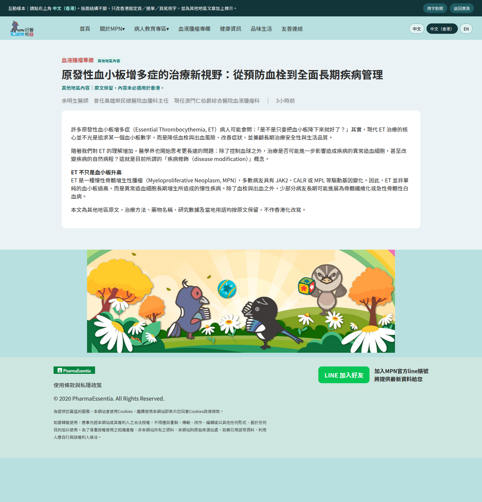
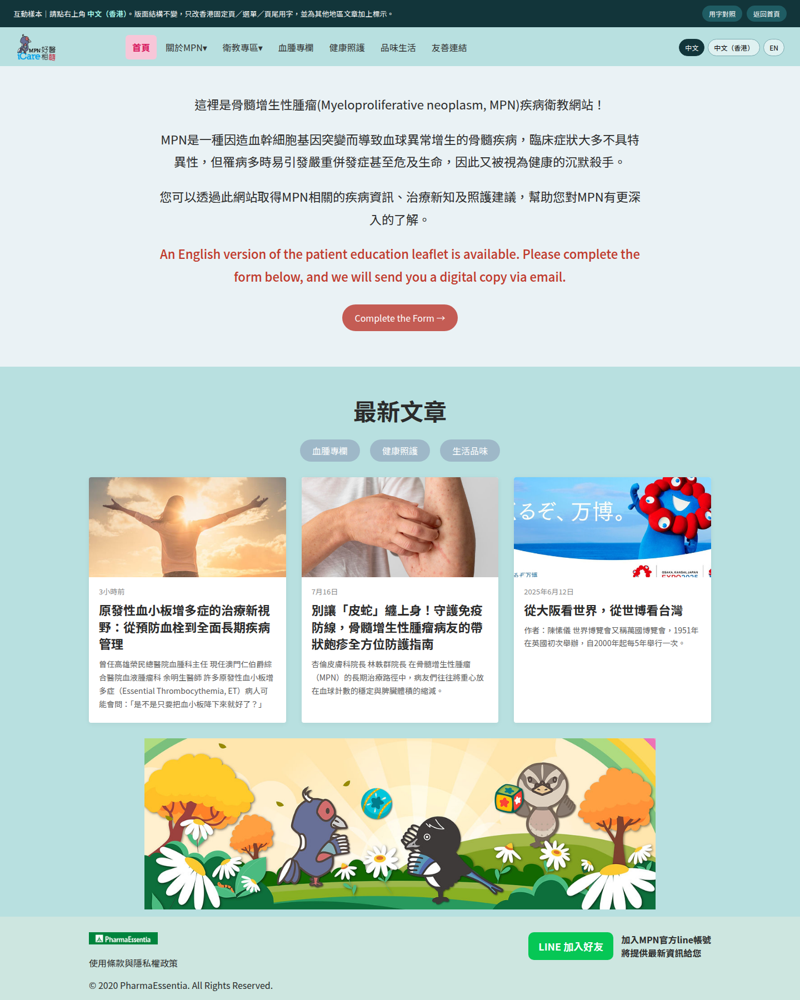
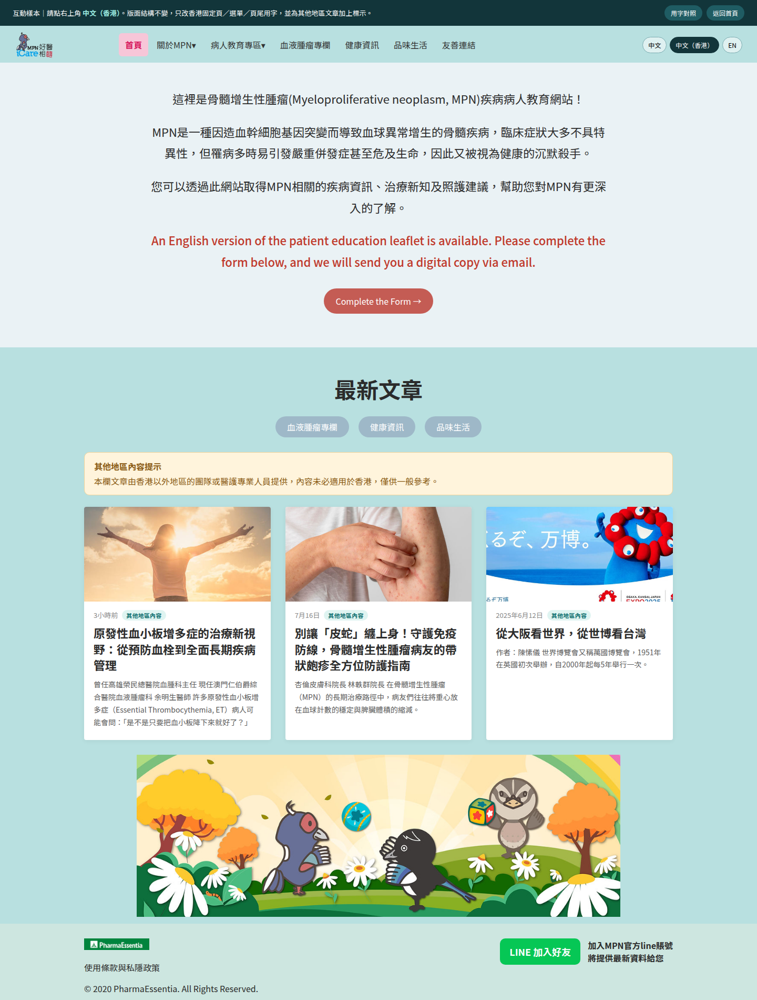
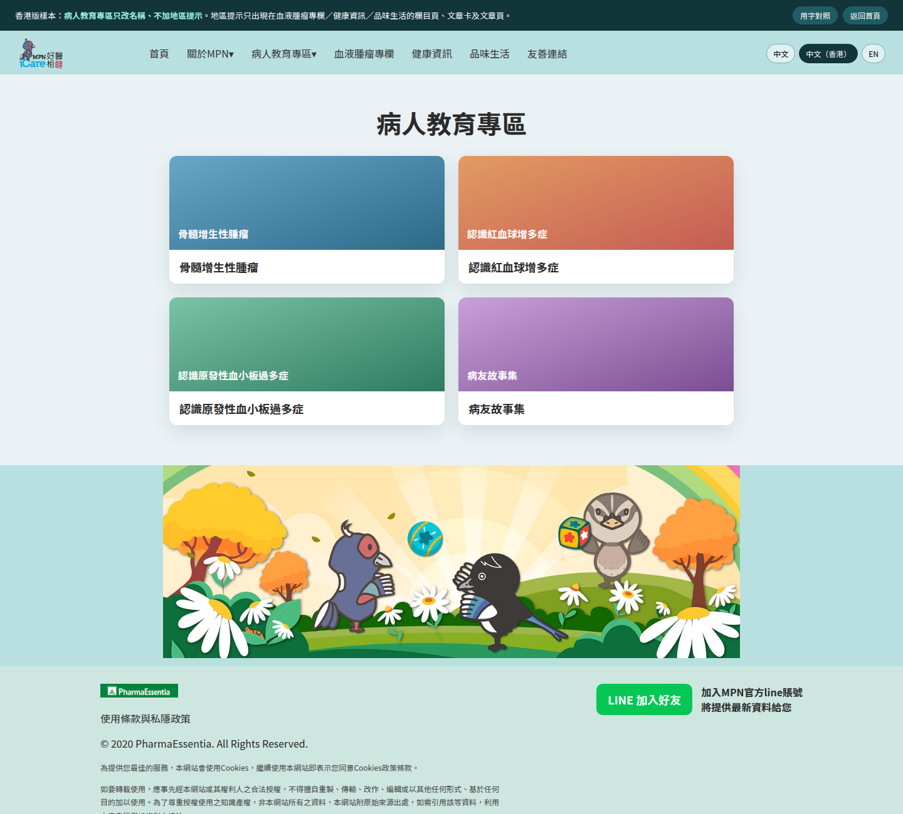
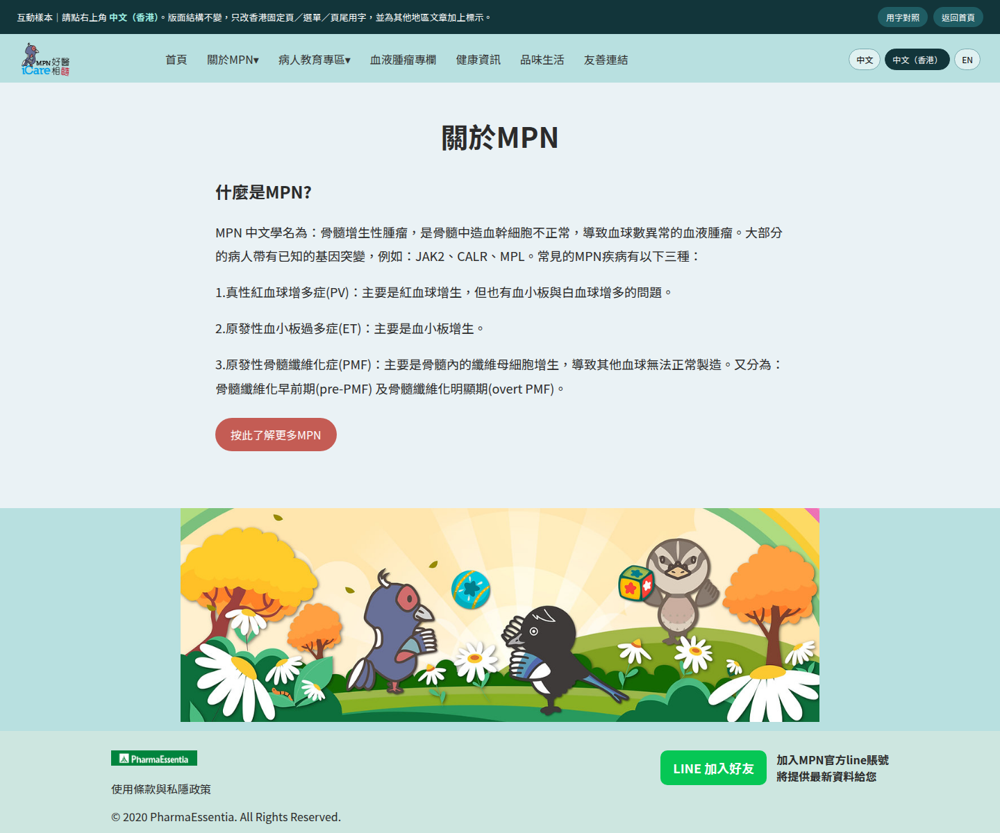
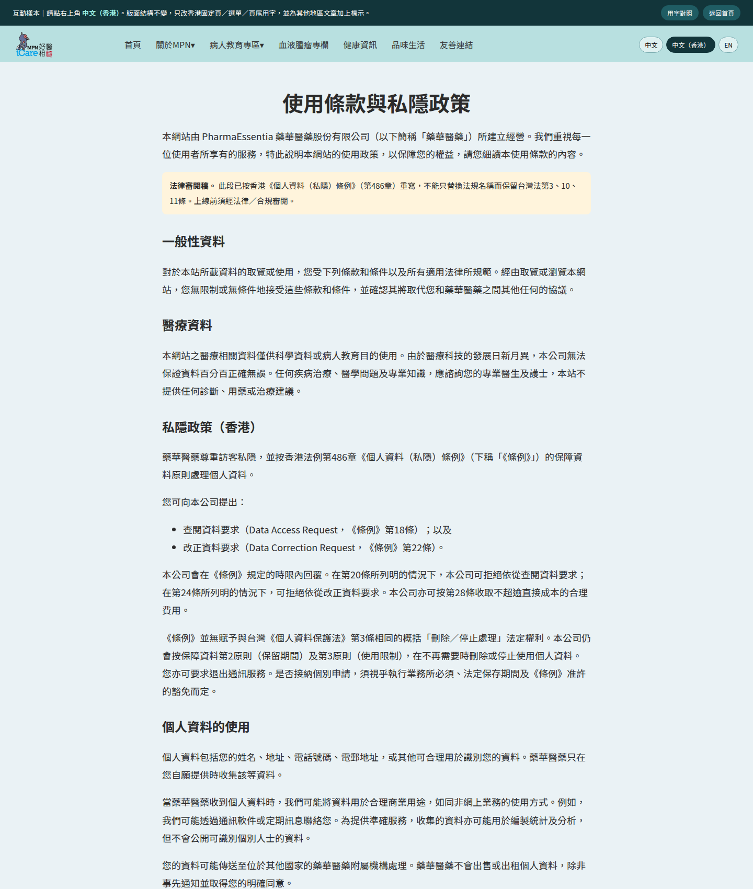

2. Article page — label only, body unchanged
One line under the title:「其他地區內容｜原文保留，內容未必適用於香港。」 Treatment methods, drug names and data stay in the original wording.

Layout matches the live site. The Hong Kong version only changes menu / titles / footer / terms, and adds “其他地區內容” labels. Article bodies are not rewritten.
Same grid. Hong Kong menu becomes 病人教育專區 / 血液腫瘤專欄 / 健康資訊 / 品味生活. Cards get a teal “其他地區內容” tag. A yellow banner appears above the article row.


One line under the title:「其他地區內容｜原文保留，內容未必適用於香港。」 Treatment methods, drug names and data stay in the original wording.

衛教專區 → 病人教育專區. 認識紅血球增多症. 有愛相髓病友故事集 → 病友故事集. Tile layout unchanged.

紅血球 / 白血球 kept. CTA becomes 按此了解更多MPN (not 按我).

Not a find-and-replace of Taiwan PDPA Arts. 3 / 10 / 11. This is a legal-review draft for 《個人資料（私隱）條例》.
